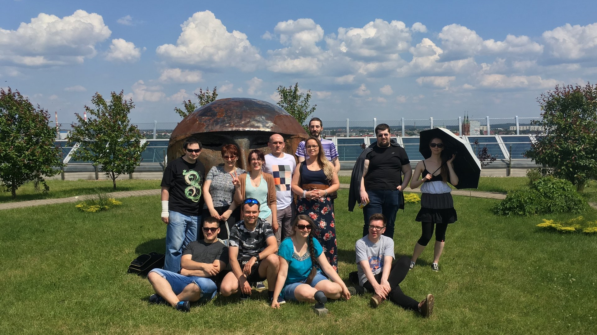

Zloty | Białystok 2018
Podsumowanie zlotu w Białymstoku
W ostatni weekend maja nasza gildia odbyła swój coroczny zlot, w tym roku w wyniku głosowania wybrany został Białystok w którym organizacją zajęła się nasza koleżanka Inka.
Tradycyjnie gildiowicze zaczęli przyjeżdżać w piątek (a trzeba nadmienić że niektórzy mieli naprawdę daleko - Holandia, Irlandia czy Niemcy). Jeszcze tego samego dnia udaliśmy się na zwiedzanie Białostockiego Parku Branickich, po czym zwiedziliśmy Rynek w okolicach którego udaliśmy się na obiad. Po obiedzie i krótkim spacerze zwartą grupą weszliśmy do knajpki z piwami crafterskimi „33 krany”, gdzie po wspólnym biesiadowaniu najlepszym piwem okrzyknęliśmy pintę truskawkową ;).Po zameldowaniu się w hotelu, chwilę posiedzieliśmy jeszcze w jednym z pokoi po czym udaliśmy się na zasłużony odpoczynek.
Drugiego dnia zebraliśmy się po śniadaniu przed hotelem i ruszyliśmy na podbój Białegostoku, w drodze do Filharmonii i Opery Podlaskiej gdzie udaliśmy się na taras górny aby podziwiać panoramę miasta odwiedziliśmy sklep plastyczny w którym zakupiliśmy niezbędne rzeczy do zrobienia taga commandera (koszt oczywiście 100 golda) dla naszej przewodniczki. Jako że pogoda dopisywała, a żar wprost lał się z nieba, przez aklamację, wszyscy zadecydowaliśmy, że trzeba iść i zakupić domowej roboty lody które dostać można było w pobliskim parku.
Tego dnia w porze obiadowej grupa się rozdzieliła część udała się do baru sushi, druga zaś na burgery po których umówiliśmy się ponownie w Parku Branickich na zbiórkę. Sobotni wieczór spędziliśmy w mieszkaniu organizatorki zlotu, popijając domowej roboty nalewki, zajadając się pizzą i grając w „Lożę Szyderców”.
Niedziela była dniem pożegnań i powrotem do domów…. Dla niektórych pełnym przygód i wrażeń.